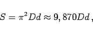
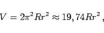
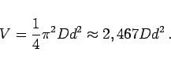

Inhalt Index DeskTop Bronstein

 Geometrie Stereometrie Körper, die durch gekrümmte Flächen begrenzt sind
Geometrie Stereometrie Körper, die durch gekrümmte Flächen begrenzt sind


Torus oder Kreisring wird ein Körper genannt, der durch die Drehung eines Kreises um eine in der Kreisebene, aber außerhalb des Kreises liegende Achse entsteht.
 |
(3.174a) |
|  | (3.174b) |
|  | (3.175a) |
|  | (3.175b) |